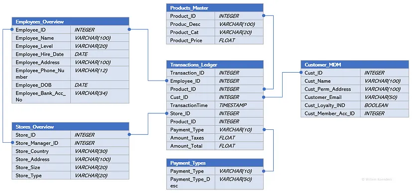

30 DB, Warehouses
TOC
- Misc
- OLAP vs OLTP
- Brands
- Offshoots
- Strategies
- Design a Warehouse
Misc
- The main difference between a relational database and a data warehouse is that the former is created and optimised to record data, whilst the latter is created and built to react to analytics.
- Optimized for read-heavy workloads that scan a small number of columns across a very large number of rows and can easily scale to petabytes of data
OLAP vs OLTP 
OLAP (Online Analytical Processing)(aka the Cube)(Data Warehouses)
- db designed to optimize performance in analysis-intensive applications
- Aggregates transactions to be less frequent but more complex
- Examples: Snowflake, Bigquery
OLTP (Online Transaction Processing) db designed for frequent, small transactions
- Executes a number of transactions occurring concurrently (i.e. at the same time)
- Use cases: online banking, shopping, order entry, or sending text messages
Data model: OLTP systems typically use a normalized data model, which means that data is stored in multiple tables and relationships are defined between the tables. This allows for efficient data manipulation and ensures data integrity. OLAP systems, on the other hand, often use a denormalized data model, where data is stored in a single table or a small number of tables. This allows for faster querying, but can make data manipulation more difficult.
Data volume: OLTP systems typically deal with smaller amounts of data, while OLAP systems are designed to handle large volumes of data.
Query complexity: OLTP systems are designed to handle simple, short queries that involve a small number of records. OLAP systems, on the other hand, are optimized for more complex queries that may involve aggregating and analyzing large amounts of data.
Data updates: OLTP systems are designed to support frequent data updates and insertions, while OLAP systems are optimized for read-only access to data.
Concurrency: OLTP systems are designed to support high levels of concurrency and handle a large number of transactions simultaneously. OLAP systems, on the other hand, are optimized for batch processing and may not perform as well with high levels of concurrency.
Brands
- Amazon Redshift, DynamoDB, RDS, S3
- Redshift is best when you have data engineers who want control over infrastructure costs and tuning.
- RDS (Relational Database Service)
- Benefits over hosting db on EC2: AWS handles scaling, availability, backups, and software and operating system updates
- S3 is like googledrive or dropbox
- Con: only contains data about the files, not whats inside them, i.e. no querying
- Ideal use cases
- backup for logs,
- raw sensor data for your IoT application,
- text files from user interviews
- images
- trained machine learning models (with the database simply storing the path to the object)
- Google BigQuery
- best when you have very spiky workloads.
- Snowflake
- A cloud data warehouse for analytics. Its columnar, which means that data is stored (under the hood) in entire columns instead of rows; this makes large analytical queries faster, so its a common choice for how to build analytical DBs.
- best when you have a more continuous usage pattern
- support for semi-structured data, data sharing, and data lake integration
- Resource: Snowflake Data Warehouse Tutorials
- Azure Synapse Analytics:
- fully managed, cloud-based data warehousing service offered by Microsoft Azure. It offers integration with Azure Machine Learning and support for real-time analytics.
- Data bricks
- Company behind spark technology and have built a cloud-based data warehousing service.
- Teradata
- SAP HANA
- ClickHouse
- Opensource, built by Yandex (Russian search engine)
- Apache Hadoop running Apache Hive
- Hive: an open-source data warehouse solution for Hadoop infrastructure. It is used to process structured data of large datasets and provides a way to run HiveQL queries.
- Resource: Apache Hive Tutorial with Examples
- Hive: an open-source data warehouse solution for Hadoop infrastructure. It is used to process structured data of large datasets and provides a way to run HiveQL queries.
- Cons
- can become expensive when an organization needs to scale them
- do not perform well when handling unstructured or complex data formats.
- Pros
- Integrating multiple data sources in a single database for single queries
- Maintaining data history, improving data quality, and keeping data consistency
- Providing a central view for multiple source system across the enterprise
- Restructuring data for fast performance on complex queries
Offshoots
- Data Mart
- Required for real-time artificial intelligence, and data analysis for different subsets of business operations.
- Scaled down version of a data warehouse with a more limited scope for groups of end users in different business units or departments
- gives groups more control to customize but also silos the data apart from the rest of the company
- Types
- dependent
- gets populated from a Data Warehouse
- independent
- gets populated from an Operational Data Store (ODS)
- dependent
- Process
- Create a initial list of questions the data mart will be used to answer
- Create Schema documents
- Include as much information as possible in the schema document because it can be used as a reference if anyone has questions about the data in the future instead of asking you
- Add any business logic that needs to be applied when reading in the data such as filters and transformation logic as well as noting the time frame of data needed and frequency of update
- Examples[](./_resources/DB,_Warehouses.resources/1-7hczEEAN-H9eCb0mXo0-Xw.gif]][](./_resources/DB,_Warehouses.resources/1-jRHzdcyuhO56M5LxGgJrLw.gif]]
- Notice the business logic for Field Name: wau (weekly active users) is the distinct count of users where the login date is current date-1 and current date-6. The reason we use current date-1 is because the most recent data is typically from yesterday and taking yesterday minus 6 days gives us 7 days to calculate wau.
- Field Name: update_date should be set to the last time the ETL was run for this table to let the user know when the data was last updated. Occasionally ETL jobs may fail and this can help troubleshoot if the table was refreshed for the day
- Create sample tables according to the schema document
- Source production data for you to validate the tables
- After the sample tables pass your QA (quality assurance) checks, you can work with the data engineer to back run any history if needed and then have them put the ETL code into production
- Transactional Store
- optimized for row-based operations such as reading and writing individual records while maintaining data integrity
- not specifically built for analytics but can be used for analytic queries as well as low latency information monitoring
- ACID (atomicity, consistency, isolation, durability) compliant, meaning they guarantee data validity despite errors and ensure that data does not become corrupt because of a failure of some sort.
- crucial to business use cases that require a high level of data integrity such as transactions happening in banking.
- Row-based makes it better at writing data.
- In contrast to data warehouses which are column bases and better for reading data
- Operational Data Stores
- Like a staging area for data required for projects
- provide fine-grained non-aggregated data
- Usually complimentary to a data warehouse
- general purpose is to integrate data from different sources into a single structure via data cleaning, resolving redundancies, and establishing business rules.
Strategies
- Inmon

- Prioritizes accuracy and consistency of data above all else.
- Querying is pretty fast (data marts)
- Tends to be a lot of upfront work, however subsequent modifications and additions are quite efficient. Recommended if:
- Data accuracy is the most important characteristic of your warehouse
- You have time/resources to do a lot of upfront work
- Kimball
Less structured approach, which speeds up the initial development cycle.
Future iterations require the same amount of work, which can be costly if youre constantly updating the warehouse Fast querying but very few quality checks
Recommended if: If youre business requirements are well-defined and stable
- You are querying lots of data often Data Vault

- You are querying lots of data often Data Vault
Trys to fix disadvantages of Kimball and Inmon strategies by waiting to the last minute to develop any kind of structure
Workflow: Sources > unstructured storage (data lake) > Staging which supports operations such as batch and streaming processes > data vault which stores all raw data virtually untouched (non-relational db?)
Advantages: efficient, fast to implement, and highly dynamic
Disadvantages: querying can be quite slow
Uh doesnt seem to be much cleaning either Recommended if: Your business goals change often
You need cheap server and storage costs
Design a Warehouse
Misc
[Oracle Data Model Documentation](https://docs.oracle.com/cd/E16338_01/doc.112/e20361/toc.htm)
Considerations
7 Vs
_Volume: How big is the incoming data stream and how much storage is needed?_
_Velocity: Refers to speed in which the data is generated and how quickly it needs to be accessed._
_Variety:_ _What format the data needs to be stored? Structured such as tables or Unstructured such as text, images, etc._
_Value: What value is derived from storing all the data?_
_Veracity: How trustworthy the data source, type and its processing are?_
_Viscosity:_ _How the data flows through the stream and what is the resistance and the processability?_
_Virality:_ _Ability of the data to be distributed over the networks and its dispersion rate across the users_
Data Quality (See [DB, Engineering](DB, Engineering) >> Data Quality)
completeness, uniqueness, timeliness, validity, accuracy, and consistency
Components

* Metamodeling:
* Defines how the conceptual, logical, and physical models are consistently linked together.
* Provides a standardized way of defining and describing models and their components (i.e. grammar, vocabulary), which helps ensure consistency and clarity in the development and use of these models.
* Data ownership should be assigned based on a mapping of data domains to the business architecture domains (i.e. market tables to the marketing department?)
* Conceptual Modeling - Involves creating business-oriented views of data that capture the major entities, relationships, and attributes involved in particular domains such as Customers, Employees, and Products.
* Logical Modeling - Involves refining the conceptual model by adding more detail, such as specifying data types, keys, and relationships between entities, and by breaking conceptual domains out into logical attributes, such as Customer Name, Employee Name, and Product SKU.
* Physical Data Modeling - Involves translating the logical data model into specific database schemas that can be implemented on a particular technology platform
Process ([article](https://towardsdatascience.com/how-to-create-a-data-warehouse-in-5-important-steps-95a8f893a3fd), [article](https://towardsdatascience.com/designing-a-data-warehouse-from-the-ground-up-tips-and-best-practices-e355b6799b99), [article](https://towardsdatascience.com/a-maturity-model-for-data-modeling-and-design-b516d978655c))
* Understand the Core Business Requirements
* Create a catalogue of _reporting stories_ for each stakeholder to an idea of the reports that each will want generated
* These will inform you of the data requirements
* e.g. "As a marketing manager, I need to know the number of products the customer bought last year in order to target them with an upsell offer."
* From the story above, I can determine that we will need to aggregate the number of products per customer based on sales from the previous year.
* Select the tools and technologies:
* Used to build and manage the data warehouse. This may include selecting a database management system (DBMS), data integration and extraction tools, and analysis and visualization tools.
* Warehouses - See Brands
* See [Production, Tools](Production, Tools) >> Orchestration, ETL Operations
* Choose a data model
* Identify Business Processes
* Focus on business process and not business departments as many departments share the same business process
* If we focus on department, we might end up with multiple copies of models and have different sources of truth.
* Choose a data model from the Business Process
* Start with the most impactful model with the lowest risk
* Consult with the stakeholders
* Should be used frequently and be critical to the business and also it must be built accurately
* Decide on the data granularity
* Most atomic level is the safest choice since all the types of queries is typically unknown
* Need to consider the size and complexity of the data at the various granularities, as well as the resources available/costs for storing and processing it.
* Examples
* customer level - easy to answer questions about individual customers, such as their purchase history or demographic information.
* transaction level - easy to answer questions about individual transactions, such as the products purchased and the total amount spent.
* daily or monthly?
* Create Conceptual Data Models (Tables)
* These represent abstract relationships that are part of your business process.
* Explains at the highest level what respective domains or concepts are, and how they are related.
* The elements within the reporting stories should be consistent with these models
* Example: Retail Sales
* Time, Location, Product, and Customer.
* Time might be used to track sales data over different time periods (e.g. daily, monthly, yearly).
* Location might be used to track sales data by store or region.
* Product might be used to track sales data by product category or specific product.
* Customer might be used to track sales data by customer demographics or customer loyalty status.
* Example
* Transactions form a key concept, where each transaction can be linked to the Products that were sold, the Customer that bought them, the method of Payment, and the Store the purchase was made in each of which constitute their own concept.
* Connectors show that each individual transaction can have at most one customer, store, or employee associated with it, but these in turn can be associated with many transactions (multi-prong connector into Transactions)
* ExampleEach Customer (1 prong connector) can have 0 or more Orders (multi-prong connector)
Each Order can have 1 or more Products
Each Product can have 0 or more Orders
Create Logical Data Models
- Breakdown each entity of the conceptual model into attributes
- Example
- Example
- Breakdown each entity of the conceptual model into attributes
Create Physical Data Models
- Details are added on where exactly (e.g., in what table), and in what format, these data attributes exist.
- e.g. finalizing table names, column names, data types, indexes, constraints, and other database objects
- Translate the logical data model into specific database schemas that can be implemented on a particular technology platform
- e.g. dimensional modelling in a star schema or normalisation in a 3rd normal form in a snowflake model.
- Example
- Example: Dimension model in a star schema
- Details are added on where exactly (e.g., in what table), and in what format, these data attributes exist.
fact_ (quantitative) and dim_ (qualitative)
Make Design and Environment decisions
- Decide on:
- Physical data models
- History requirements
- Environment provisions & set up
- Decide on:
Build a prototype (aka wireframe) of the end product
- The business end-user may have a vision, they couldnt coherently articulate at the requirement phase.
- The prototype need not use real-world data or be in the reporting tool.
** Profile known sources data **
- Learn about the data quality issues, and try and remediate those issues before designing your data pipelines.
- If an issue cannot be resolved, you will have to handle it in your data pipeline
- Learn about the data quality issues, and try and remediate those issues before designing your data pipelines.
Build, Test, and Iterate
- Create ETL jobs or data pipelines
- Iteratively need to unit test the individual components of the pipeline.
- The data will need to be moved from the source system into our physical warehouse
- Profile data
- data types, and if conversion is required
- the amount of history that needs to be pulled
- validate the models output numbers with the business end-user
- Create ETL jobs or data pipelines
Progress towards Data Maturity (see Job, Organizational and Team Development >> Data Maturity)